EDS
iLab Sonde
Multi-parameter handheld
Sewer networks
Sewer Flow MonitoringInflow & Infiltration StudiesData as a Service (DaaS)Model CalibrationThermal Infiltration SurveysBlockage & Overflow AlarmsWorks VerificationWater & environment
Water Quality MonitoringSampling & Sampler HireTrade Waste MonitoringClosed Channel FlowRainfall MonitoringReal-time data & analysis
Real-Time MonitoringPump Station MonitoringSCADA & TelemetryData Analysis & ReportingNetwork Assessment & ReviewField services & support
Auditing & CalibrationEquipment RentalFacility ManagementTraining & Support View allProducts
EDS is a manufacturer, and represents leading manufacturers, in water supply and management, wastewater management, flow monitoring and process control.
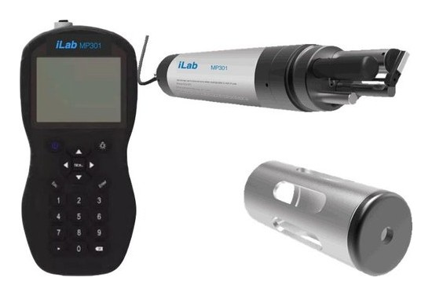
Data loggers, sensors and the Pump Station Manager, manufactured by EDS.
View range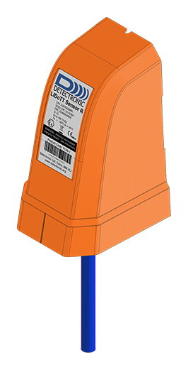
Ultrasonic flow, level and water quality instruments engineered for sewer networks.
View range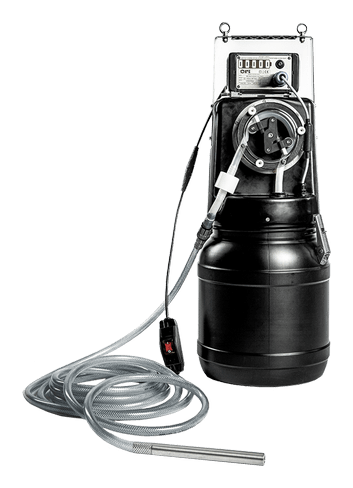
Rugged mobile and stationary samplers from the world's leading maker of certified sampling systems.
View range
Loggers and sensors from Hach, including the Sigma and Marsh-McBirney legacy lines.
View range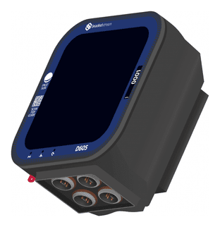
Temperature loggers, thermistor strings and cloud data, proven in the extremes of Alaska.
View range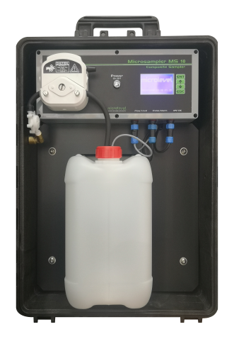
Portable, permanent and refrigerated composite samplers for wastewater and process liquids.
View range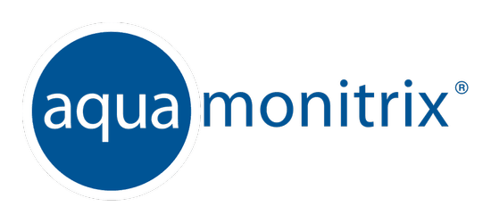
Real-time nitrate and nitrite measurement with laboratory accuracy in the field.
View range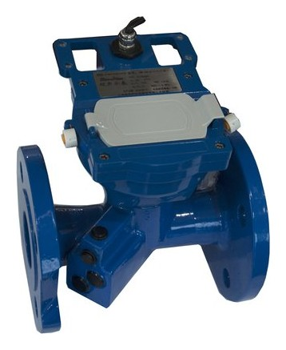
Ultrasonic water meters and flow meters to ISO and AWWA standards.
View rangeInstrument finder
All 53 instruments from every range, in one place. Filter by what you need to measure, or search by name.
Showing all 53 instruments
Multi-parameter handheld
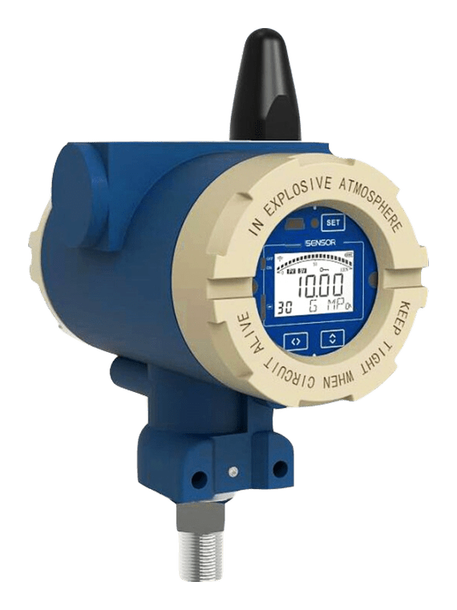
Portable 4G pressure logger
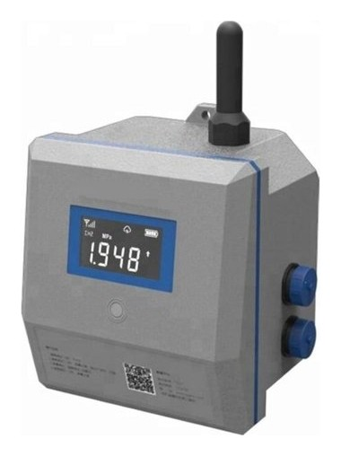
4G data logger
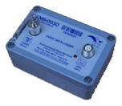
Dual channel logger
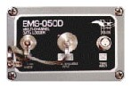
Multi-channel logger
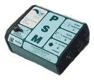
PSM, the EDS flagship since 1991
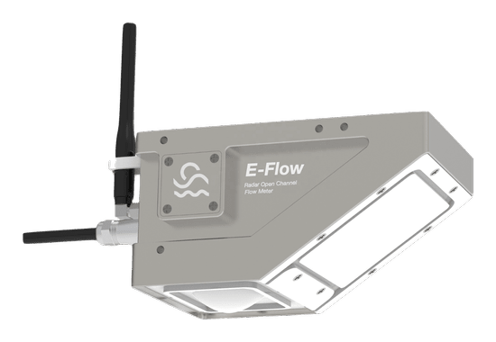
Flow sensor
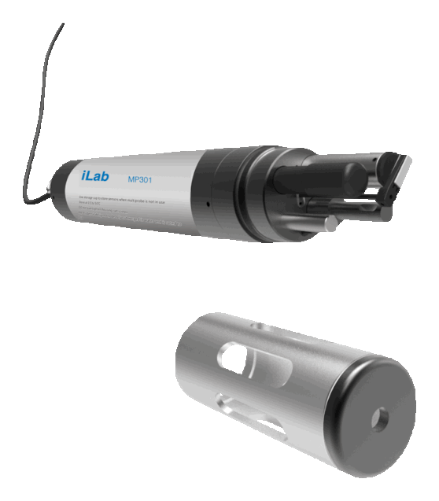
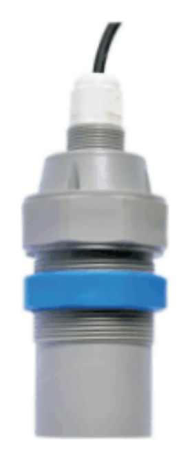
Level sensor
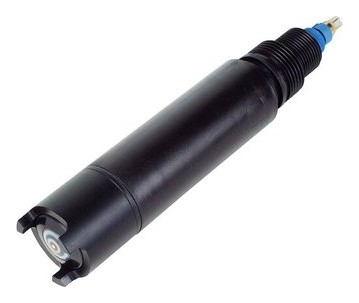
Electro-conductivity sensor
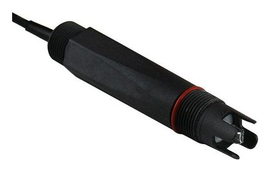
pH sensor
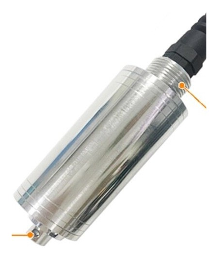
Turbidity sensor
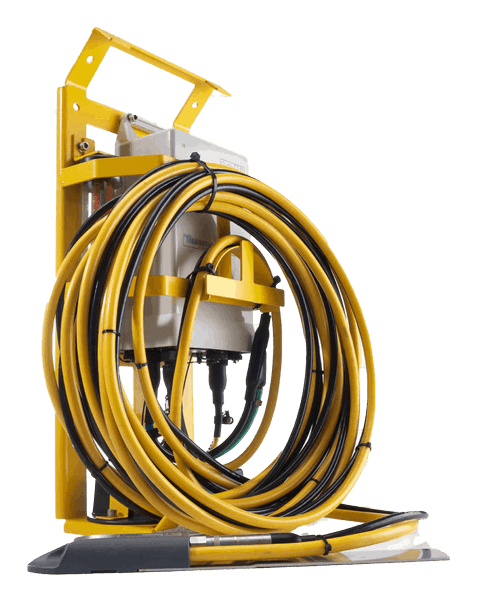
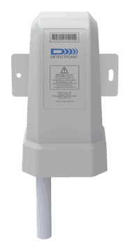
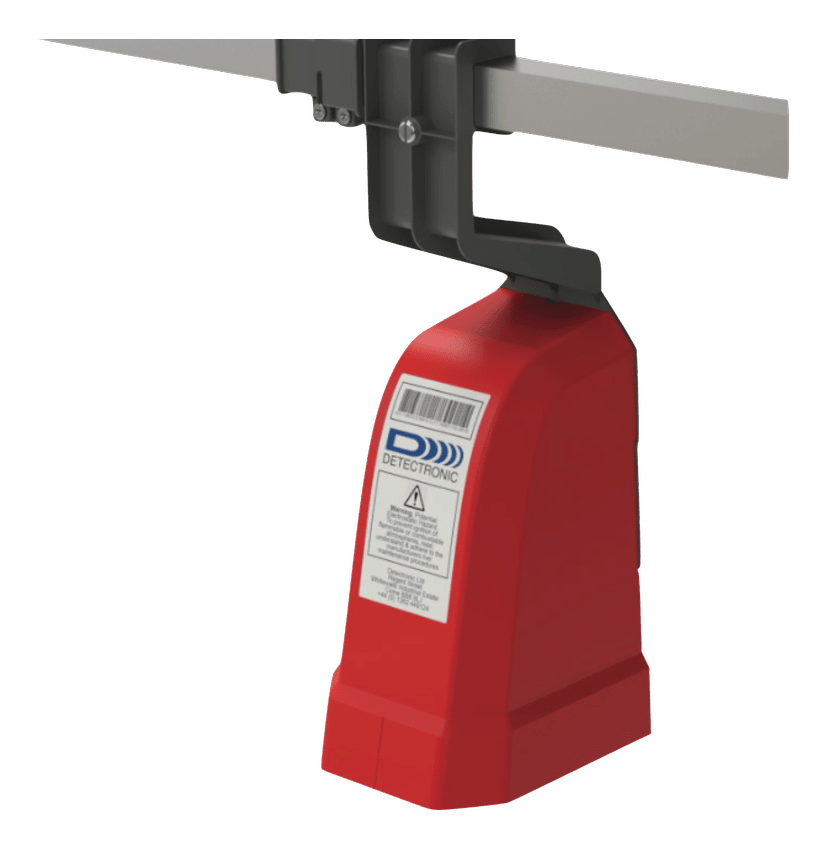
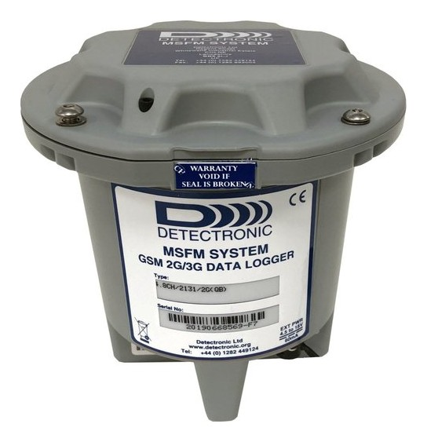
Rugged remote multichannel loggers
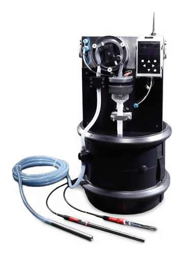
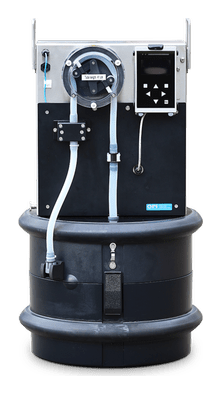
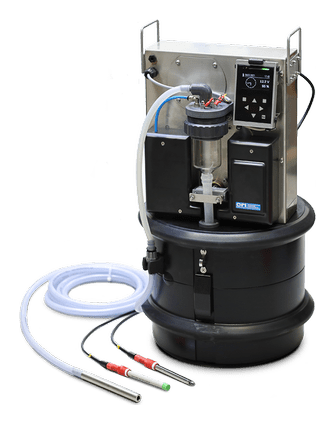
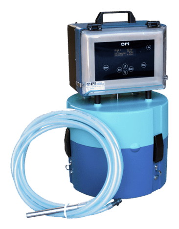
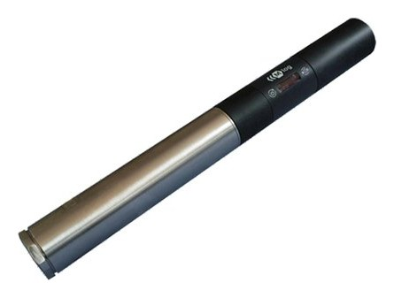
Multitool logger
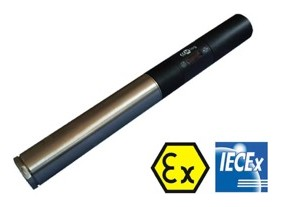
ATEX and IECEx
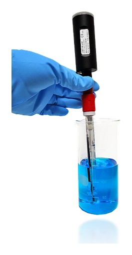
1-wire Bluetooth
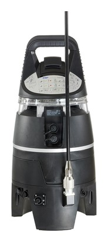
Gas monitoring
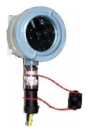
Optical sensors


Non-contact


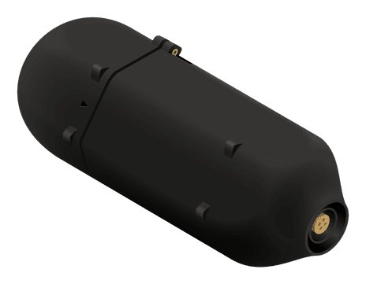
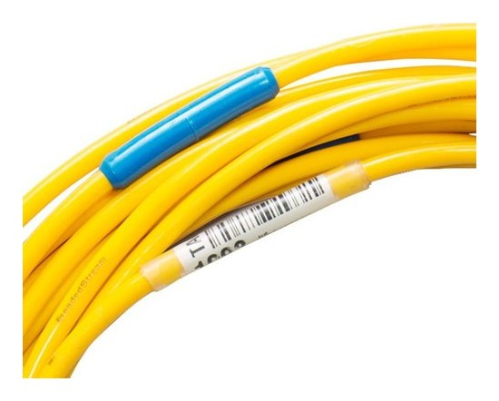
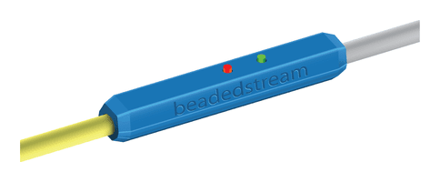
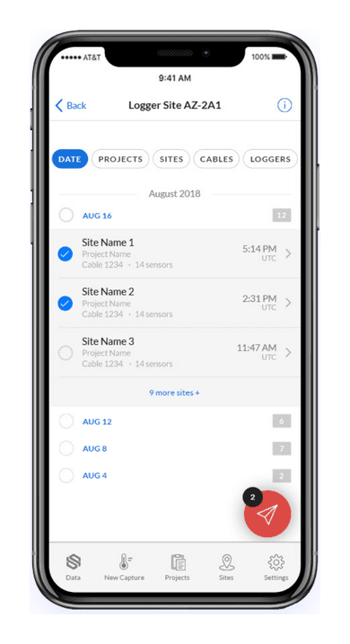
Connectivity
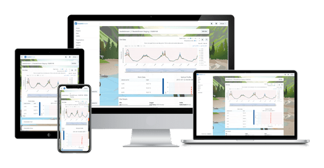
Connectivity
Portable composite sampler for wastewater, factory drains, manholes and water canals
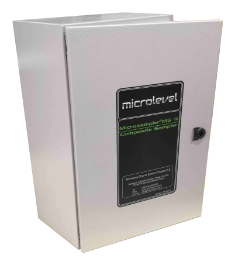
Fixed composite sampling unit for industrial wastewater, manholes, streams and channels
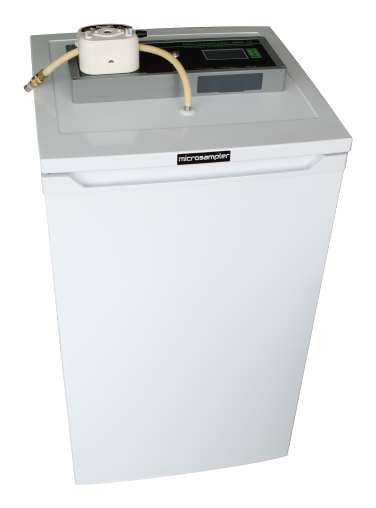
Stationary refrigerated composite sampling unit
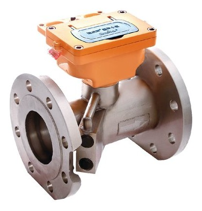
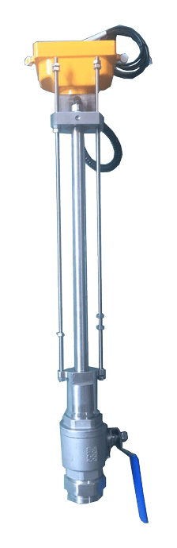
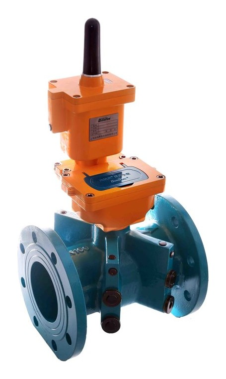
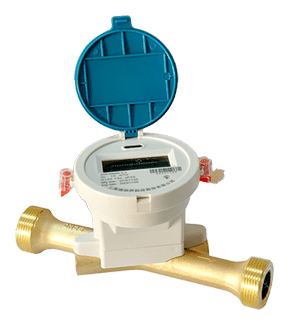
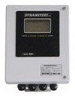
Clamp-on
Try another word or type, or ask our team which instrument suits your application.
Featured
Self contained water level measurement and alarm device. Radar level sensor, battery, modem and aerial in one compact, Zone 0 certified device.
Our team has installed, serviced and calibrated all of them. Ask us which suits your application.